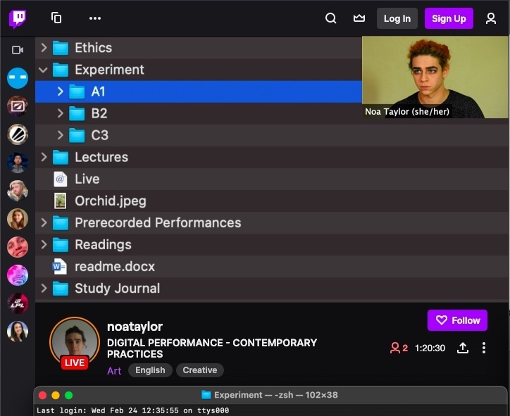

And Some Implications for Virtu* Ethics

On the afternoon of February 24th I connected to Microsoft OneDrive, Twitch and a shell window to better understand the individual and interrelated feautures of these digital structures. Alongside this I developed further insight into the practicalities of hosting a live stream; and live streaming as an artistic medium. I later explored ways to make my stream more interactive and engaging, applying what I learnt on occasions where I streamed chess games instead.
Since recording this event I have migrated to exclusively free, open source software. Moving forwards I plan to explore the relationship between open source docment production and play in community contexts. I consider that starting a chess stream provides an avenue for relevant practice based research.
Lastly, on the topic of ethical practice, I have recently reflected on the etymological connection between virtue and virtual(ity). Engaging in moral reflection about this ethico-etymological link was not a primary intention of this experimental livestream. However, as a matter of ethical curiosity, I speculate as to the inscription of virtue in virtual spaces. In this regard, I intend to further my understanding of virtu* by exploring, for example, relevant applications of such normative ethics. I expect that in specific virtual contexts better understanding such a discourse could facilitate the development of welcoming and inclusive environments for audiences and performers alike.